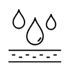
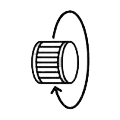
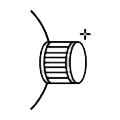
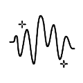
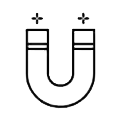
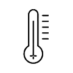
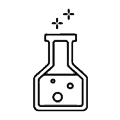
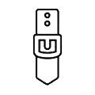
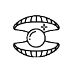
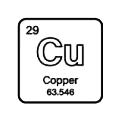

-
시계
-
메종
-
서비스


국가/지역을 선택하세요.
- AMERICAS
- ASIA
- EUROPE
- MIDDLE EAST - AFRICA
- INTERNATIONAL
- Canada (EN)
- Canada (FR)
- Chile
- Costa Rica
- Ecuador
- Guatemala
- Panama
- Paraguay
- USA
- Australia
- China (中国)
- Hong Kong SAR, China (EN)
- Korea (KR)
- India
- Indonesia (EN)
- Japan (日本)
- Philippines (EN)
- Singapore (EN)
- Vietnam (EN)
- Albania (EN)
- Belgium (EN)
- Bulgaria (EN)
- Croatia (EN)
- Cyprus (EN)
- Czech Republic (EN)
- Denmark (EN)
- Deutschland
- España
- Finland (EN)
- France
- Greece (EN)
- Hungary (EN)
- Ireland
- Italia
- Luxembourg (EN)
- Malta (EN)
- Monaco (EN)
- Österreich
- Poland (EN)
- Portugal
- Romania (EN)
- Schweiz (DE)
- Suisse (FR)
- Svizzera (IT)
- Slovakia (EN)
- Slovenia (EN)
- Sweden (EN)
- The Netherlands (EN)
- United Kingdom
- لإمارات العربية المتحدة (العربية)
- United Arab Emirates (EN)
- South Africa
- International (EN)
- International (FR)
- International (ES)
- International (PT)
- دولي (عربي)
사용자 지침
User Manuals
관리 권장 사항
고객님의 보메 메르시에 시계는 세심한 설계와 제작 과정을 거쳐 제작되었습니다. 여기에 제시된 권장 사항은 시계를 오랫동안 완벽하게 작동하는 상태로 유지하는 데 도움이 될 것입니다.
Baume & Mercier 시계는 하루 24시간 끊임없이 작동하는 고정밀 기기이므로, 시간이 지나도 정밀성과 방수 기능을 유지하려면 정기적인 유지관리가 필요합니다.
- 서비스 간격
-
방수성
-
와인딩
-
크라운
- 캘린더 설정
-
충격과 진동
-
배터리 교체

-
자성
-
온도
-
화학 제품
- 청소
-
스트랩
-
진주
-
청동
-
서비스 간격
서비스 간격은 시계의 사용 방식과 착용 환경에 따라 달라질 수 있습니다.
예를 들어 방수 기능은 개스킷의 자연적 노화에 의해 영향을 받을 수 있지만, 와인딩 크라운의 정기적인 사용, 충격, 땀, 화장품 사용, 온도 변화 등의 다른 요인에 의해서도 영향을 받을 수 있습니다.
매년 방수 기능을 점검하고, 3~5년마다 당사 서비스 센터에서 전체 서비스를 받으시는 것이 좋습니다.
Baumatic 무브먼트가 장착된 시계에 대한 참고 사항새로운 윤활유를 사용하면 서비스 간격을 연장할 수 있습니다(3~5년이 아닌 5~7년).
-
방수성
빈티지 모델을 포함한 일부 특정 모델을 제외하고, 보메 메르시에 시계는 최소 30m 방수 기능을 갖추고 있습니다. 모델의 방수 기능이 30m를 초과하는 경우, 케이스 뒷면에 수심이 표시되어 있습니다.
방수 기능이 있는 시계는 먼지, 습기, 그리고 침수로 인한 손상 위험으로부터 무브먼트를 보호합니다. 따라서 일상생활에서 빗속, 샤워, 수영 등 어떤 상황에서든 방수 기능을 유지합니다. 하지만 자동차나 정원 청소 기기에서 나오는 고압의 물 분사는 피해야 하며, 제트 스키 등 격렬한 수상 스포츠를 할 때 발생할 수 있는 충격으로부터도 보호해야 합니다.
시계의 방수 기능은 영구적으로 보장되지 않습니다. 방수 기능을 담당하는 개스킷은 자연적인 노화뿐만 아니라, 와인딩 크라운의 정기적인 사용, 충격, 그리고 땀, 화장품 사용, 온도 변화 등의 요인에 의해 물리적으로 손상될 수 있습니다.
이것이 우리가 매년, 특히 여름 휴가 전에 방수 기능을 점검할 것을 권장하는 이유입니다.
경고시계가 물에 잠겼을 때는 크라운이 단단히 닫혀 있는지(모델에 따라 누르거나 조여져 있는지) 확인하고, 물이 케이스 안으로 들어갈 수 있으므로 푸시 버튼을 누르지 마세요.
시계 내부에 결로 현상이 발견되면 즉시 당사의 공인 판매점 이나 서비스 센터 로 가져가시기 바랍니다 .
-
와인딩
와인딩 자동 시계자동 또는 셀프 와인딩 기계식 시계는 착용자의 손목 움직임에 따라 자동으로 태엽을 감는 정교한 메커니즘을 갖추고 있습니다. 완전히 감았을 때 자동 시계의 파워 리저브는 모델에 따라 약 40시간에서 120시간 사이입니다. 누적된 파워 리저브 덕분에 시계는 밤새도록 작동하면서도 편안한 작동 여유를 유지할 수 있습니다. 그러나 며칠 동안 시계를 착용하지 않으면 시계가 멈추거나 파워 리저브가 부족하여 최적의 정확도를 보장할 수 없게 되는데, 이는 시계가 완전히 감겼을 때 도달합니다. 이 경우, 다시 사용하기 전에 크라운을 시계 방향으로 약 20바퀴 돌려 수동으로 감아 모든 조건에서 완벽하게 작동하는지 확인하는 것이 좋습니다. 몇 시간 동안 시계를 착용하면 활동 수준에 따라 시계가 완벽하게 감겨 있을 것입니다.
참고자동 태엽의 효율은 착용자 손목의 움직임과 직결됩니다. 움직임이 충분하지 않으면 착용 중이라도 시계가 멈출 수 있습니다. 이 경우, 용두를 시계 방향으로 약 20바퀴 돌려 수동으로 태엽을 감아주는 것을 권장합니다. 또한, 시계줄은 착용자 손목에 꼭 맞아야 합니다. 시계줄이 너무 느슨하면 시계가 제대로 감겨지지 않을 수 있습니다.
시계를 감기 전에 손목에서 시계를 분리해야 합니다. 이렇게 하면 시계를 감는 동안 크라운 스템이 완전히 똑바로 유지되고 크라운이나 무브먼트가 손상될 위험을 방지할 수 있습니다.
자동 태엽 시계를 의도적으로 흔들어 태엽을 감아주지 마십시오. 효과가 없을 뿐만 아니라 무브먼트가 손상될 수 있습니다.
시계를 몇 달 동안 착용하지 않더라도 정기적으로 수동으로 태엽을 감아주시는 것이 좋습니다. 이렇게 하면 오일이 무브먼트 축 위로 굳거나 흘러내리는 것을 방지할 수 있습니다.
보매틱 무브먼트가 장착된 시계에 대한 참고 사항보매틱 시계는 120시간(5일)의 파워 리저브를 제공하여 긴 주말이나 일주일 후 착용을 해제하고 다시 착용할 수 있어 착용감이 더욱 향상됩니다. 또한, 다른 시계들은 시계를 완전히 감았을 때 최적의 정밀도에 도달하는 것과 달리, 파워 리저브 기간 동안 안정적으로 정확한 정확도를 유지합니다. 또한, 보매틱 시계를 손목에 착용하기 전에 충분한 파워 리저브를 확보하려면 일반 무브먼트의 경우 20회가 아닌 50회 정도 크라운을 돌려야 합니다. 보매틱 시계는 파워 리저브가 더 높기 때문입니다.
수동 시계 와인딩수동 또는 핸드와인딩 기계식 시계는 용두를 돌려 수동으로 태엽을 감아야 합니다. 용두가 더 이상 움직이지 않을 때까지 돌려야 합니다. 용두가 더 이상 움직이지 않으면 무브먼트가 심각하게 손상될 위험이 있습니다.
시계를 감기 전에 손목에서 시계를 분리해야 합니다. 이렇게 하면 시계를 감는 동안 크라운 스템이 완전히 똑바로 유지되고 크라운이나 무브먼트가 손상될 위험을 방지할 수 있습니다.
수동 기계식 시계의 파워 리저브는 모델에 따라 약 40시간에서 90시간 사이입니다. 이 시간이 지나면 전력 공급이 부족해져 시계가 더 이상 작동하지 않습니다.
매일 아침, 손목에 차기 전에 시계를 감아주시는 것이 좋습니다.
마지막으로, 시계를 몇 달 동안 착용하지 않더라도 정기적으로 태엽을 감아주시는 것이 좋습니다. 이렇게 하면 오일이 무브먼트 축 위로 굳거나 흘러내리는 것을 방지할 수 있습니다.
-
크라운
크라운을 사용한 후에는 시계를 습기로부터 보호하고 케이스 내부로 물이 들어가는 것을 방지하기 위해 크라운을 단단히 닫아 두십시오(모델에 따라 누르거나 조여 두십시오).
-
캘린더 설정
날짜, 요일, 월, 년, 달의 위상 등의 달력 기능이 있는 대부분의 시계에는 달력 기능을 빠르게 설정하지 않는 시간 창(이를 "제외 기간"이라고 함)이 있습니다.
따라서 무브먼트 손상 위험을 방지하기 위해 먼저 사용 설명서에 나와 있는 시계의 정확한 제외 기간을 확인하는 것이 중요합니다. 사용 설명서는 이 페이지 상단에서 보증서에 있는 모델 번호(예: M0A10402) 또는 시계 케이스백에 새겨진 번호를 입력하여 다운로드할 수 있습니다. 시계 사용 설명서에 제외 기간이 명시되어 있지 않은 경우, 언제든지 캘린더를 설정할 수 있습니다.
-
충격과 진동
모든 보메 & 메르시에 시계는 공식 NIHS(스위스 시계 산업 표준)에 따라 테스트되었으며, 최대 5,000g의 충격에도 견딜 수 있습니다. 하지만 강한 충격이나 반복적이고 잦은 진동은 피해야 합니다.
-
배터리 교체
배터리 수명은 일반적으로 시계 모델에 따라 3~6년입니다.
중앙 초침이 장착된 대부분의 쿼츠 시계에는 배터리 부족(EOL – 수명 종료)을 표시하는 시스템이 장착되어 있습니다. 배터리가 고갈되기 약 2주 전에 중앙 초침이 4초마다 점프하기 시작하여 배터리를 교체해야 한다는 신호를 보냅니다.
누출로 인해 무브먼트가 손상될 수 있으므로 소모된 배터리를 시계 내부에 넣지 마십시오.
배터리는 인증된 시계 기술자에게 교체를 의뢰하여 시계의 방수 기능과 무브먼트 상태를 점검받는 것이 좋습니다.
-
자성
우리 주변 환경은 다양한 원인으로 인한 자기장 간섭에 점점 더 취약해지고 있으며, 이는 보메 메르시에 시계의 작동에 영향을 미칠 수 있습니다. 따라서 자석, 전자 기기, 핸드백 잠금장치, iPad/iPhone 케이스 등과 같은 전자기파원에 시계를 가까이 두거나 직접 접촉하지 않도록 최대한 주의하시기 바랍니다.
Baumatic 무브먼트 가 장착된 시계에 대한 참고 사항실리콘(Powerscape® 기술이 적용된 이스케이프먼트 시스템), 무브먼트의 민감한 부분에 비강자성 요소, ChromeCore 케이싱 링을 사용하여 Baumatic 무브먼트가 장착된 시계는 일상 생활에서 발생하는 자기장에 강합니다(1,500가우스 이상 = 현재 ISO 764/NIHS 90.10 기준보다 25배 높음).
-
온도
시계를 극한의 온도(60ºC/140ºF 이상 또는 0ºC/32ºF 미만)나 심한 온도 변화에 노출시키지 마세요.
-
화학 제품
팔찌, 케이스 또는 개스킷을 손상시킬 수 있는 용매, 세제, 향수 또는 화장품과의 직접적인 접촉을 피하십시오.
-
세척
방수 케이스와 메탈 브레이슬릿의 광택을 유지하려면 부드러운 칫솔과 따뜻한 비눗물을 사용하세요. 세척이 끝나면 깨끗한 물로 깨끗이 헹구고 부드러운 천으로 닦아 말려주세요. 바다나 수영장에서 수영한 후에도 같은 방법으로 세척하는 것이 좋습니다.
시계를 청소하기 전에 크라운이 단단히 닫혀 있는지 확인하세요(모델에 따라 눌려 있거나 조여져 있는지).
-
스트랩
가죽 스트랩가죽 스트랩의 수명은 사용 조건과 착용 빈도에 따라 달라집니다.
예를 들어, 스트랩은 피부의 산성도, 땀, 온도 변화, 햇빛에 장시간 노출, 피부 크림, 화장품 등의 영향을 받습니다.
스포츠 활동이나 물속으로의 침수 등 극한의 환경에서는 내구성이 상당히 떨어집니다.
가죽 스트랩을 주문하려면 공인 판매점에 문의 하거나 문의하기를 눌러 주세요 .
고무 스트랩고무 스트랩의 수명은 사용 조건과 착용 빈도에 따라 달라집니다.
고무 스트랩을 오랫동안 사용하려면 기름이나 화장품에 닿지 않도록 하고 장시간 직사광선에 노출되지 않도록 주의하세요. 또한, 옷에 문지르면 변색(특히 흰색 스트랩의 경우)되거나 조기에 손상될 수 있으므로 주의하세요. 또한, 고무 스트랩은 비눗물로 세척할 수 있습니다.
-
진주
보메 메르시에는 부드러운 마른 천이나 깨끗한 물로 부드럽게 세척할 것을 권장합니다. 시계를 완전히 말린 후 보관하세요. 자개 장식과 향수나 바디로션을 함께 사용하면 진주빛 반사에 악영향을 줄 수 있으므로 사용하지 않는 것이 좋습니다. 따라서 향수나 바디로션을 바른 후 시계를 착용하기 전에 약 10분 정도 간격을 두세요. 자개 장식 시계는 부드러운 면 소재의 가방에 보관하는 것이 더 안전합니다.
-
청동
청동은 착용자의 생활 방식에 따라 시간이 지남에 따라 변하는 소재입니다. 특히 땀이나 바닷물과 같은 부식성 물질과 접촉하면 이 합금은 녹청색을 띠게 되어 시계의 독특한 매력을 더합니다.
다양한 서비스
- 완벽한 서비스
- 방수 서비스
- 복구 서비스
- 배터리 서비스
-
3~5년(Baumatic 모델의 경우 5~7년)마다 완전 서비스를 받는 것이 좋지만, 시계의 사용 방식과 착용 환경에 따라 달라질 수 있습니다.
진단 후, 움직임이 더 이상 제대로 작동하지 않을 경우 이 서비스를 권장합니다.
여기에는 다음과 같은 작업이 포함됩니다.
- 시계 분해
- 무브먼트 오버홀: 분해, 세척, 마모된 부품 교체, 재조립 및 윤활
- 스틸 또는 옐로우/레드 골드 시계의 케이스(및 금속 브레이슬릿) 광택
- 케이스(및 금속 팔찌)의 초음파 세척
- 새로운 개스킷으로 케이스 재조립
- 필요하거나 고객의 요청에 따라 다른 부품을 교체합니다.
스틸 나사, 크로노그래프 바늘(서비스 포함)
기타 바늘, 크리스탈, 크라운, 푸시 버튼, 다이얼,... (별도 청구)
- 시계 재조립
- 기술적 및 미적 최종 제어
-
시계의 방수 기능은 영구적으로 보장되지 않습니다. 방수 기능을 담당하는 개스킷은 자연적인 노화뿐만 아니라, 와인딩 크라운의 정기적인 사용, 충격, 그리고 땀, 화장품 사용, 온도 변화 등의 요인에 의해 물리적으로 손상될 수 있습니다.
매년 시계의 방수 기능을 점검하고, 시계가 더 이상 방수 기능을 발휘하지 못할 경우 즉시 이 서비스를 실시할 것을 권장하는 이유가 바로 여기에 있습니다.
이 서비스에는 다음과 같은 작업이 포함됩니다.
- 케이스 분해
- 케이스 및 금속 팔찌의 초음파 세척
- 새로운 개스킷으로 케이스 재조립
- Quartz 모델 배터리 교체
- 필요하거나 고객의 요청에 따라 다른 부품 교체: 크리스탈, 크라운, 푸시 버튼 등 (별도 청구)
- 기술적 및 미적 최종 제어
-
시계에는 감정적 가치가 있을 수 있다는 것을 알고 계시듯이, Baume & Mercier는 시계의 연식이나 상태에 관계없이 모든 시계를 수리해드립니다.
빈티지 시계에 대한 서비스는 일반적으로 현대 모델에 대한 서비스보다 더 섬세하며 복원이 필요할 수 있습니다.
가장 오래된 모델을 복원하는 기술은 매우 드물기 때문에 이러한 시계는 스위스에 있는 Baume & Mercier 시계 제작 워크숍으로 반납하여 전문 시계 장인이 독점적으로 수리해야 하며 표준 서비스(최소 8주)보다 시간이 더 오래 걸립니다.
Baume & Mercier는 복구 서비스 중에 수행된 모든 작업과 교체된 부품에 대해 12개월 보증을 제공합니다. -
시계 수리공은 진단 결과 배터리가 소진되었고 무브먼트와 개스킷이 시계의 정밀성과 방수 기능을 보장하는 양호한 상태인 경우 배터리 서비스를 권장할 것입니다.
시계의 성능에 따라 3~6년에 한 번씩 배터리 서비스를 받아야 합니다.
이 서비스에는 다음과 같은 작업이 포함됩니다.
- 케이스백 개구부
- 배터리 교체
- 케이스백 및 크라운 튜브 개스킷 교체
- 케이스백 클로징
- 기술적 및 미적 최종 제어
도난당하거나 분실된 시계
보메 메르시에는 시계 및 보석 범죄에 대응하기 위해 엔퀴러스(Enquirus) 와 협력하고 있습니다 . 엔퀴러스는 귀중품을 안전하게 보호하는 디지털 금고, 사용하기 쉬운 도난 신고 시스템, 그리고 중고 시장에서 구매한 물품을 조사할 수 있는 검색 기능을 제공합니다. 시계 및 보석 제조업체, 전 세계 법 집행 기관 및 보험 회사와 협력하여 설계된 엔퀴러스는 소유주가 무료로 등록, 신고 및 검색을 할 수 있도록 지원합니다. 이를 통해 시계와 보석을 더욱 쉽게 추적하고 정당한 소유자에게 반환할 수 있습니다.
오늘 등록하시면 귀하의 컬렉션이 전 세계 어디에서나 접근할 수 있는 안전한 금고에 안전하게 보관됩니다.
ENQUIRUS에서 자세히 알아보세요